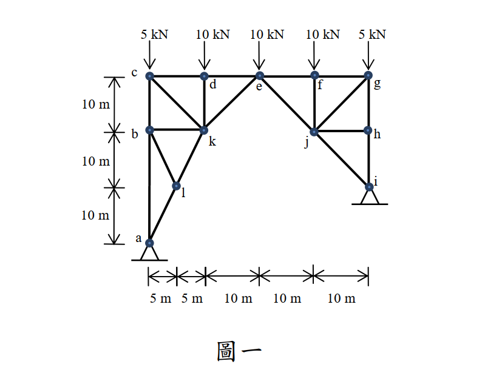

考題編號：SA-2013-1
主分類： SA-U1-2 靜定桁架分析
副分類： SA-U1-3 三鉸拱
分析法： 三鉸拱原理 / 節點法 / 截面法
標籤： 桁架 三鉸拱 靜定 零力桿 隱藏條件
1. 原始題目重述 (Problem Restatement)
分析圖一桁架結構桿件 ke, kd, kc, kb, kl 之內力。請註明拉力或壓力。（25 分）

圖說：本結構由多根桿件組成，左右兩側不完全對稱（左側支承 a 在底端，右側支承 i 較高），頂部承受 5 個垂直向下之集中載重。待求內力之桿件皆連接於節點 k。
2. 考題核心精神與出題者意圖 (Core Concepts & Examiner's Intent)
本題是一道極具巧思的陷阱題與觀念題，主要測驗考生：
- 整體結構穩定性判定與三鉸拱概念：若將兩端支承皆視為一鉸一滾（一般桁架假設），會發現內部力量無法平衡。觀察結構可發現，節點 e 下方無底弦桿，左半部與右半部僅靠節點 e 相連。這其實是一個偽裝成桁架的「三鉸拱」。兩端支承 a、i 皆為鉸支承（提供水平反力），利用左、右兩半部分別對中央鉸接點（節點 e）取力矩皆為零的條件，即可順利解出 4 個支承反力。
- 截面法之進階應用：善用截面法切過特殊位置（如 d-e 與 k-e 之間），能瞬間利用單一平衡方程式求出斜桿 $F_{ke}$。
- 零力桿與幾何特徵：迅速判斷節點 l 與 b 的平衡條件，找出零力桿（$F_{lb}=0, F_{kb}=0$），可大幅簡化計算並降低出錯率。
3. 解題戰略地圖與陷阱分析 (Strategic Roadmap & Trap Analysis)
解題策略：
- 座標系統建立：以 a 點為原點 $(0,0)$。依據尺寸標示，得出各節點座標：$l(5,10)$、$k(10,20)$、$b(0,20)$、$c(0,30)$、$d(10,30)$、$e(20,30)$、$i(40,10)$ 等。
- 支承判斷與整體反力：判斷為三鉸拱（鉸點 a, e, i）。
- 左半部自由體對 e 取力矩 $\sum M_e = 0 \Rightarrow 2 Ay - 3 Ax = 20$
- 右半部自由體對 e 取力矩 $\sum M_e = 0 \Rightarrow Iy + Ix = 10$
- 加上全局平衡 $\sum F_x = 0, \sum F_y = 0$，解出 $Ax, Ay, Ix, Iy$。 - 截面法求 $F_{ke}$：於 x=10~20 之間作垂直截面，切斷 d-e 與 k-e，取左半部自由體，由 $\sum F_y = 0$ 直接求出 $F_{ke}$。
- 節點法求其餘桿件：
- 節點 d：無其他斜桿，直接由垂直平衡求出 $F_{kd}$。
- 節點 a、l、b：連鎖推導出零力桿 $F_{lb}=0$、$F_{kb}=0$，並求出 $F_{kl}$。
- 節點 c：求出 $F_{kc}$。 - 節點 k 總體驗算：最後以 k 點作 $x, y$ 方向力平衡檢驗，確保所有解答互相吻合。
陷阱分析：
- 誤認外在靜定（假設水平反力為零）：這是本題最大的致命傷。若強行假設 $Ax=0$，將導致後續在 k 點發生嚴重的力學矛盾（$\sum F_x=0$ 與 $\sum F_y=0$ 解出的內力不一致）。必須察覺三鉸拱的幾何特性。
- 誤判鉸支承為滾支承：若認為 i 點是滾支承 ($Ix=0$)，則右半部對 e 點取力矩將無法平衡，此矛盾反證了 i 必為鉸支承。
3.5 變數層次分析 (Variable Hierarchy Analysis)
最終目標
計算桿件 ke, kd, kc, kb, kl 之內力並註明拉壓。
本題關鍵公式與聯立方程式
$\boxed{\cdot}$ = 需由前步驟推導，非題目直接給定的變數
$$\text{三鉸拱左半部: } \sum M_e = 0 \Rightarrow 30 \cdot Ax - 20 \cdot Ay + 5(20) + 10(10) = 0$$
$$\text{三鉸拱右半部: } \sum M_e = 0 \Rightarrow 20 \cdot Iy + 20 \cdot \boxed{Ix} - 10(10) - 5(20) = 0$$
L1：題目直接給定
| 符號 | 數值 | 說明 |
|---|---|---|
| $P_c, P_g$ | 5 kN | c, g 點向下集中載重 |
| $P_d, P_e, P_f$ | 10 kN | d, e, f 點向下集中載重 |
L2：需知識點推導
| 變數 | 數值 | 說明 |
|---|---|---|
| $Ax$ | 8 kN (向右) | 左支承水平反力 |
| $Ay$ | 22 kN (向上) | 左支承垂直反力 |
| $Ix$ | 8 kN (向左) | 右支承水平反力 |
| $Iy$ | 18 kN (向上) | 右支承垂直反力 |
4. 步驟化詳細計算過程 (Step-by-Step Detailed Calculation)
Step 1：判斷結構型式與計算支承反力
此結構缺少底部相連的弦桿，左右兩半部僅靠頂部節點 e 連接，屬「三鉸拱」結構。兩端 a、i 應為鉸支承（提供水平反力）。
令 $Ax$ 向右為正，$Ay$ 向上為正；$Ix$ 向右為正，$Iy$ 向上為正。
-
全局平衡：
$\sum F_x = 0 \Rightarrow Ax + Ix = 0 \Rightarrow Ix = -Ax$
$\sum F_y = 0 \Rightarrow Ay + Iy = 5 + 10 + 10 + 10 + 5 = 40 \Rightarrow Iy = 40 - Ay$ -
左半部對 e 點 (20,30) 取力矩：
$\sum M_e = 0$ (逆時針為正)
$Ax \cdot 30 - Ay \cdot 20 + 5 \cdot 20 + 10 \cdot 10 = 0$
$\Rightarrow 30 Ax - 20 Ay + 200 = 0 \Rightarrow 2 Ay - 3 Ax = 20 \quad \text{--- (式 a)}$ -
右半部對 e 點 (20,30) 取力矩：
$\sum M_e = 0$ (逆時針為正)
$Iy \cdot 20 - Ix \cdot 20 - 10 \cdot 10 - 5 \cdot 20 = 0$
(註：i 點在 e 點右下方，向左的力會造成順時針力矩，向上的力造成逆時針力矩)
將 $Ix = -Ax$, $Iy = 40 - Ay$ 代入：
$20 (40 - Ay) - 20 (-Ax) - 200 = 0 \Rightarrow 800 - 20 Ay + 20 Ax - 200 = 0$
$\Rightarrow 20 Ay - 20 Ax = 600 \Rightarrow Ay - Ax = 30 \Rightarrow Ay = Ax + 30 \quad \text{--- (式 b)}$ -
解聯立方程式：
將 (式 b) 代入 (式 a)：
$2(Ax + 30) - 3 Ax = 20 \Rightarrow 60 - Ax = 20 \Rightarrow Ax = 40$?
(重新檢視右半部力矩方向：i 點座標(40,10)，e 點座標(20,30)。Ix 設向右，對 e 點產生逆時針力矩 $+20 Ix$；Iy 向上，產生逆時針力矩 $+20 Iy$)
更正右半部方程式：$20 Iy + 20 Ix - 200 = 0 \Rightarrow Iy + Ix = 10$
代入全局關係：$(40 - Ay) + (-Ax) = 10 \Rightarrow Ay + Ax = 30 \Rightarrow Ay = 30 - Ax$
代回式 a：$2(30 - Ax) - 3 Ax = 20 \Rightarrow 60 - 5 Ax = 20 \Rightarrow Ax = 8 \text{ kN}$
得知：$Ax = 8 \text{ kN}, Ay = 22 \text{ kN}$
Step 2：截面法計算桿件 ke 內力
在 $x=10$ 到 $x=20$ 之間作一垂直截面，切斷 d-e 與 k-e 兩桿。取左半部為自由體。
垂直力平衡 $\sum F_y = 0$：
向上的力：$Ay = 22 \text{ kN}$
向下的力：$P_c = 5 \text{ kN}, P_d = 10 \text{ kN}$
斜桿 k-e 垂直分量：$F_{ke, y} = F_{ke} \cdot \frac{1}{\sqrt{2}}$
$22 - 5 - 10 + F_{ke, y} = 0 \Rightarrow F_{ke, y} = -7 \text{ kN}$
$$F_{ke} = -7\sqrt{2} \text{ kN} \approx -9.899 \text{ kN (壓力)}$$
Step 3：節點法計算桿件 kd 內力
取節點 d (10,30) 分析：
連接桿件為水平的 c-d、e-d，以及垂直的 k-d。
垂直力平衡 $\sum F_y = 0$：
向下外力 $10 \text{ kN}$，故垂直桿 k-d 必須提供向上的支撐力。
$$-10 - F_{kd} = 0 \Rightarrow F_{kd} = -10 \text{ kN (壓力)}$$
Step 4：節點法計算 kl, kb, kc 內力
-
節點 a (0,0)：
水平平衡 $\sum F_x = 0$：$Ax + F_{al, x} = 0 \Rightarrow 8 + F_{al} \cdot \frac{5}{\sqrt{125}} = 0 \Rightarrow F_{al} = -8\sqrt{5} \text{ kN}$
垂直平衡 $\sum F_y = 0$：$Ay + F_{ab} + F_{al, y} = 0 \Rightarrow 22 + F_{ab} + (-8\sqrt{5})\frac{10}{\sqrt{125}} = 0 \Rightarrow F_{ab} = -6 \text{ kN}$ -
節點 l (5,10)：
桿 a-l-k 共線。桿 b-l 垂直於此線的方向無其他力量平衡，故 $F_{bl} = 0$。
沿斜線方向平衡：$F_{kl} = F_{al} = -8\sqrt{5} \text{ kN}$
$$F_{kl} = -8\sqrt{5} \text{ kN} \approx -17.89 \text{ kN (壓力)}$$ -
節點 b (0,20)：
因為 $F_{bl} = 0$，水平方向只有桿 b-k，故水平平衡 $\sum F_x = 0 \Rightarrow$ $F_{kb} = 0$。
垂直平衡 $\sum F_y = 0 \Rightarrow F_{bc} = F_{ab} = -6 \text{ kN}$。 -
節點 c (0,30)：
垂直平衡 $\sum F_y = 0$：向下外力 5 kN，c-b 推力 6 kN (向上)。
$-5 - F_{cb} + F_{ck, y} = 0 \Rightarrow -5 - (-6) - F_{ck} \frac{1}{\sqrt{2}} = 0 \Rightarrow F_{ck} \frac{1}{\sqrt{2}} = 1$
$$F_{kc} = \sqrt{2} \text{ kN} \approx 1.414 \text{ kN (拉力)}$$
Step 5：利用節點 k 總體驗算
取節點 k (10,20)，將求得的所有內力代入檢驗平衡：
- $F_{kl} = -8\sqrt{5}$ (左下)
- $F_{kb} = 0$ (左)
- $F_{kc} = \sqrt{2}$ (左上)
- $F_{kd} = -10$ (上)
- $F_{ke} = -7\sqrt{2}$ (右上)
水平平衡驗算：
$\sum F_x = F_{kl}(\frac{-1}{\sqrt{5}}) + F_{kc}(\frac{-1}{\sqrt{2}}) + F_{ke}(\frac{1}{\sqrt{2}})$
$= (-8\sqrt{5})(\frac{-1}{\sqrt{5}}) + (\sqrt{2})(\frac{-1}{\sqrt{2}}) + (-7\sqrt{2})(\frac{1}{\sqrt{2}}) = 8 - 1 - 7 = 0 \quad \text{(OK!)}$
垂直平衡驗算：
$\sum F_y = F_{kl}(\frac{-2}{\sqrt{5}}) + F_{kc}(\frac{1}{\sqrt{2}}) + F_{kd} + F_{ke}(\frac{1}{\sqrt{2}})$
$= (-8\sqrt{5})(\frac{-2}{\sqrt{5}}) + (\sqrt{2})(\frac{1}{\sqrt{2}}) - 10 + (-7\sqrt{2})(\frac{1}{\sqrt{2}}) = 16 + 1 - 10 - 7 = 0 \quad \text{(OK!)}$
最終答案確認無誤。
5. 關鍵爭議點與進階探討 (Critical Issues & Advanced Discussion)
- 若忽略了三鉸拱特性會發生什麼事？ 若考生沒有察覺底弦桿的缺失，習慣性假設右支承為滾支承 ($Ix=0$) 並認定 $Ax=0$，在推導到節點 k 時，會發現 $\sum F_x = 0$ 算出 $F_{ke} = 15\sqrt{2}$，但 $\sum F_y = 0$ 卻算出 $F_{ke} = -5\sqrt{2}$，產生無法化解的力學矛盾。這是本題防範無腦套用公式的最佳防護網。
- 解題路徑優化：本題指定求解的 5 根桿件全部圍繞著節點 k。先利用截面法求出外圍的 $F_{ke}$，再用邊界條件找出零力桿 $F_{kb}$，最後層層向內推進是最高效的解法。不需將右半部的每一根桿件都解出來，即可獲得滿分。